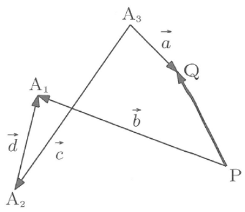

2S-ALH @2017/06/07 “平面のベクトル”
グループ問題
問題A. 下のベクトル \(\vec{PQ}\) を \(\vec{a},\vec{b},\vec{c},\vec{d}\) で表せ．

\(\vec{PQ}=\vec{b}-\vec{d}-\vec{c}+\vec{a}\)
問題B. \(\vec{a}=(-2,3)\)，\(\vec{b}=(1,-1)\) のとき，\(-\frac{1}{2}\vec{a}+\frac{1}{3}\vec{b}\) の大きさを求めよ．
\(-\frac{1}{2}\vec{a}+\frac{1}{3}\vec{b}=(1,-\frac{3}{2})+(\frac{1}{3},-\frac{1}{3})\)
\(=(\frac{4}{3},-\frac{11}{6})\) ．よって，
\(|-\frac{1}{2}\vec{a}+\frac{1}{3}\vec{b}|=\sqrt{(\frac{4}{3})^2+(-\frac{11}{6})^2}\) \(=\frac{\sqrt{185}}{6}\)
問題C. \(\vec{a}=(\sqrt{5},-5)\) と \(\vec{b}=(\sqrt{10},\sqrt{2})\) の内積を求めよ．
\(\vec{a}\cdot\vec{b}\) \(=\sqrt{5}\cdot\sqrt{10}+(-5)\cdot\sqrt{2}\)
\(=\sqrt{50}-5\sqrt{2}\) \(=0\)
問題D. \(A(2,3), B(6,-7), C(-1,k), D(k,2)\) のとき，\(\vec{AB}\) と \(\vec{CD}\) が平行となるように \(k\) の値を定めよ．
\((6,-7)-(2,3)=m\{(k,2)-(-1,k)\}\)
\((4,-10)=m(k+1,2-k)\)
\[\begin{eqnarray} \left\{ \begin{array}{l} 4=mk+m \\ -10=2m-mk \end{array} \right. \end{eqnarray}\]\(4=-2k-2\)
∴ \(k=-3\)
この資料と解答はwebで公開しています：

情報工学科のサイト（「大分高専 情報」で検索）→ スタッフ紹介（教職員紹介） → 西村俊二 → 一番下のリンク → 2S ALH
解説及び問題は下記より：
高遠節夫他，「新線型代数問題集」，大日本図書